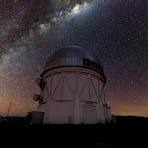

Centros Astronômicos
Observatórios como ALMA e Paranal são líderes mundiais, permitindo que visitantes explorem o universo com equipamentos de última geração.

Observatórios como ALMA e Paranal são líderes mundiais, permitindo que visitantes explorem o universo com equipamentos de última geração.